Trace is a cooperative board game about lesbian feminist networks in Pittsburgh during the 1970s and 1980s. It began as archival research and became a playable system where history is encountered through movement, cards, shared decisions, and mutual support.
The project asks how a game can preserve historical material without turning it into a simple quiz or timeline. Instead of designing a winner and loser, I designed a structure where players have to find one another, respond to events, and move through the city together.
From Archive to Play
The research started with the question of how lesbian feminist communities made space for themselves in the city. Through literature review and archival research at the University of Pittsburgh, I found materials from Allegheny Feminists, community newsletters, local organizations, meeting places, protest records, and cultural events.
These sources were not only historical references. They became the texture of the game: the language on the cards, the places on the board, and the situations players would have to respond to together.
"Our Reality is Eros, Our Desire is Revolution" — Susanna Downie Papers, 1972
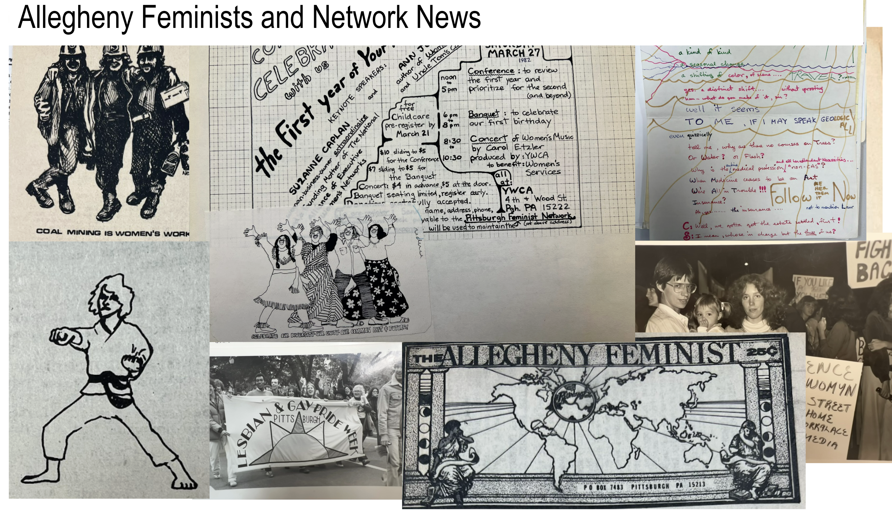
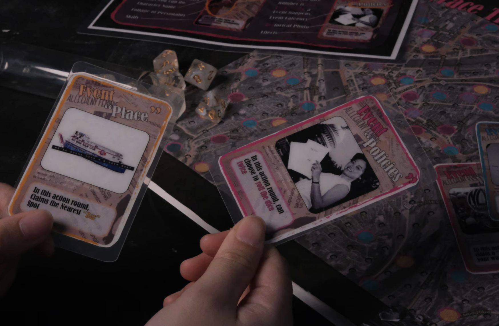
Designing Cooperation
The first version used a simple path-based board game structure. Players moved across the board, drew event cards, and tried to reunite instead of competing against one another. The mechanic was intentionally direct, because I wanted the first prototype to test the emotional structure of the game before making the system more complex.
The important rule was that progress depended on connection. A player could not simply win alone. The game had to make cooperation feel like part of the historical argument.
System Iteration
In the second iteration, the map became more specific to Pittsburgh. I built the board around historically significant spots and refined the cards into several types: places, events, resources, and people. Each card carried a piece of research, but also had to do something inside the game.
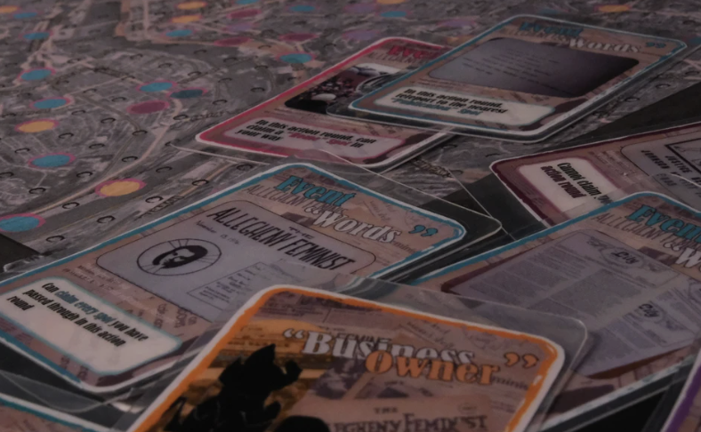
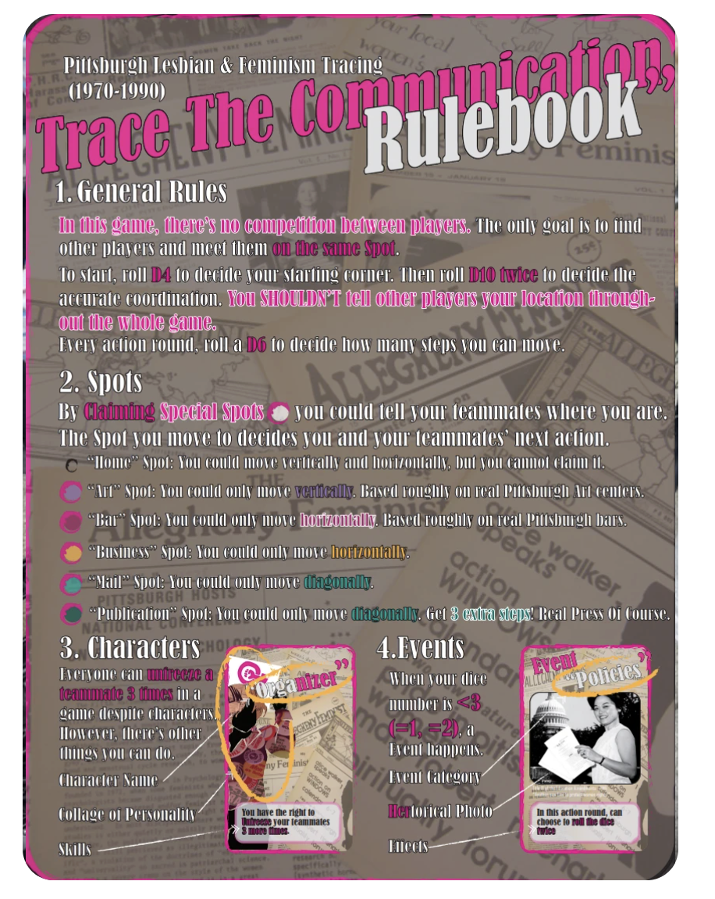
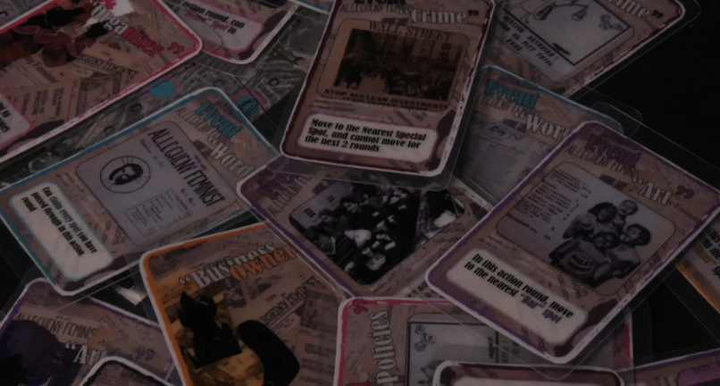
Final Cards
The final card deck carries the game through specific historical situations: policies, places, organizers, art, and crime. The cards are designed to feel like fragments from an archive scattered back into play.
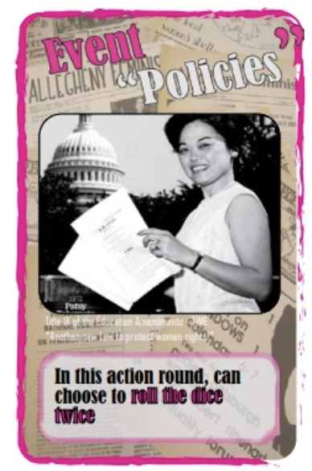
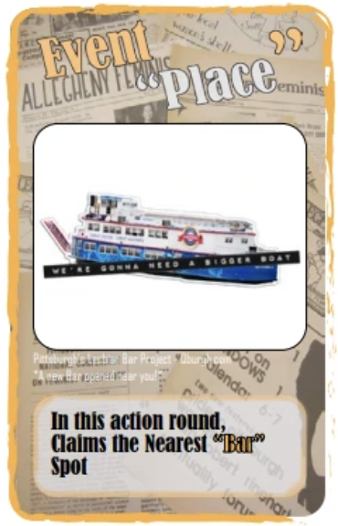
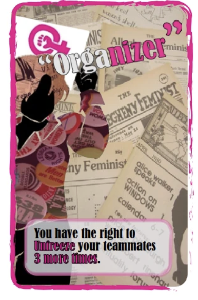
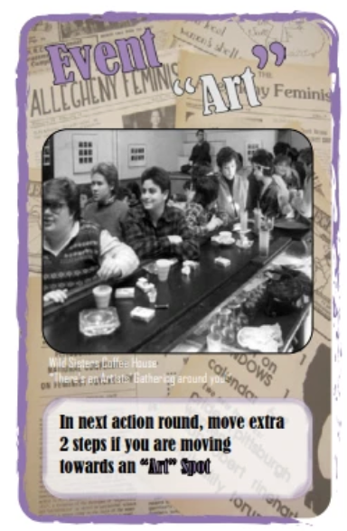
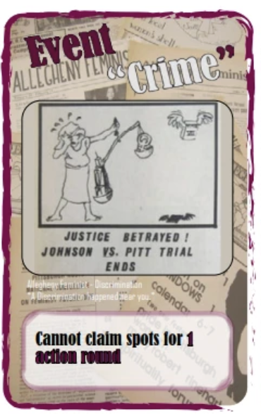
Final Board
The final board maps Pittsburgh through a hexagonal grid and a network of historical spots. It is not a neutral map. It is a way to show how social infrastructure, bookstores, newspapers, community groups, theaters, and protest sites formed a spatial network.
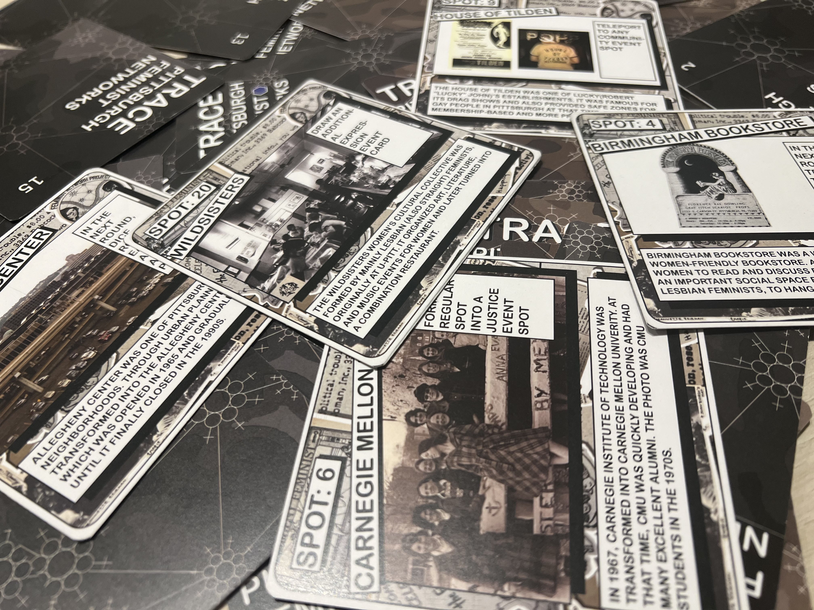
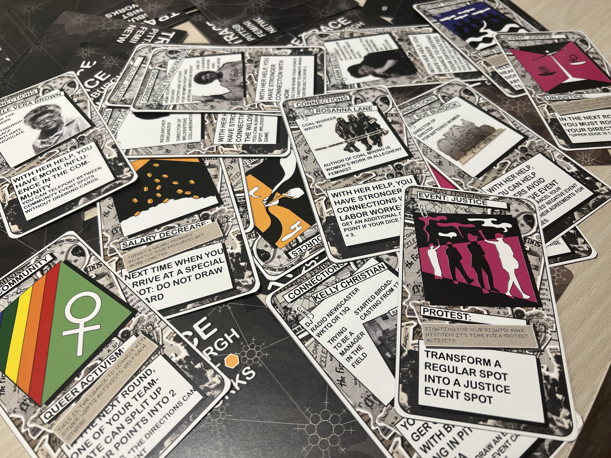
Reflection
Trace became a way to hold archival material in a more physical and social form. The project was not only about explaining a history, but about asking players to move through a version of that history together.
I learned that historical preservation can happen through interaction, not only documentation. A game can make research feel active: players read, choose, negotiate, and notice relationships between people, places, and events that might otherwise stay flattened on a page.